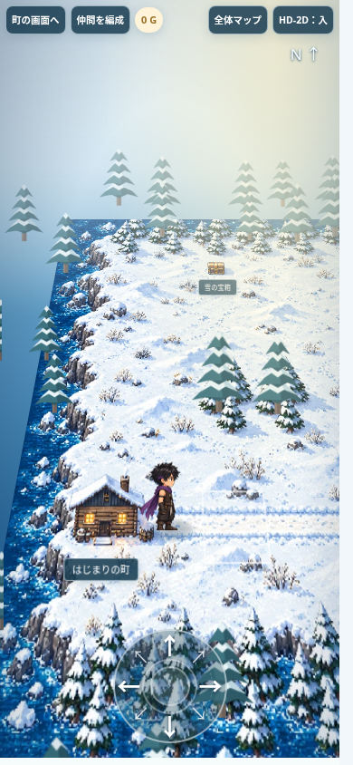
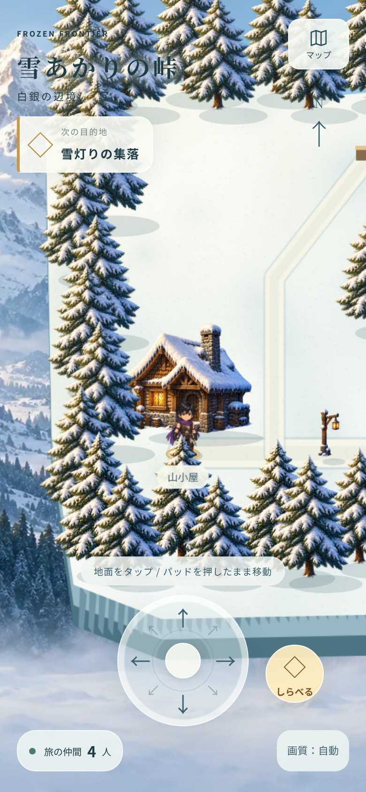
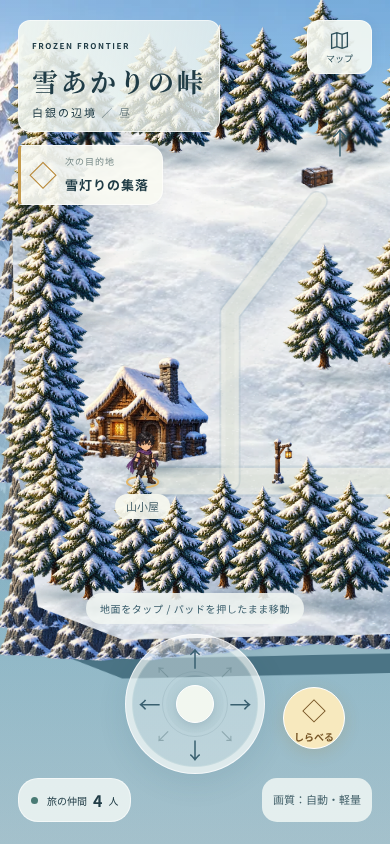
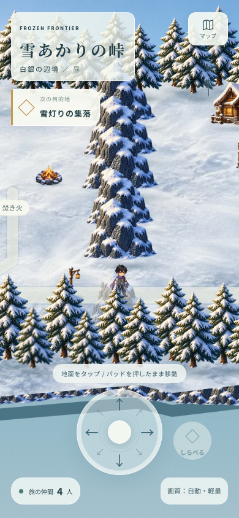
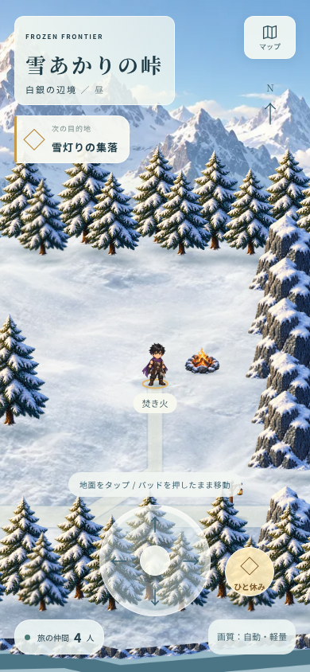
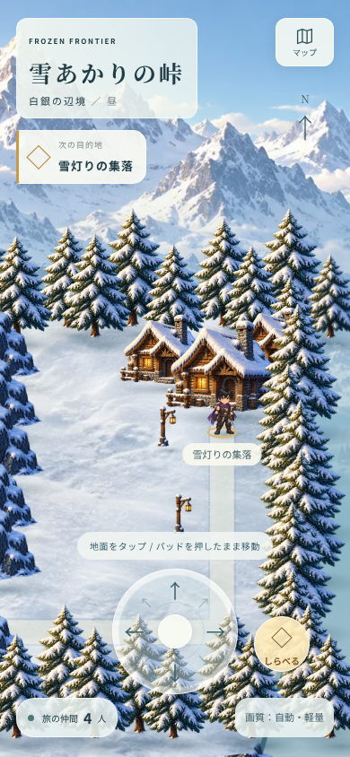
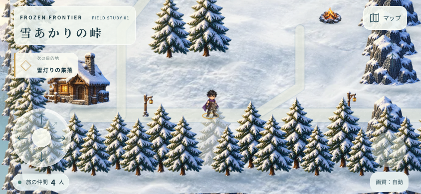

FROZEN FRONTIER / FIELD STUDY 01雪山を、気持ちよく歩く。
地面と立体物を分離し、雪の質感・建物の奥行き・操作の見やすさを改善した独立試作です。既存のゲームファイルは変更していません。
スマホは初期状態から軽量描画 ／ 静止中の更新なし ／ 主人公1人表示 ／ 実行用画像 約567KiB
26項目の操作・構造検証に成功。CPU4倍の疑似検証で描画間隔 約33ms。実機での確認は未実施です。
画面を確認し、改善を重ねました

現行版：地面画像を傾け、仮の木を立てた表示。
初回試作：立体物を分離。雪面の単調さと画面端の構図が課題。
最終試作：雪面・岩肌・接地影・画面構図・タイトルの読みやすさを調整。峠と休息地点

岩の峠。通路は現行と同じマップ判定。
焚き火。操作できる施設の近くでボタンを有効化。
集落。家は地面と分けて立てた絵として描画。横画面でも主人公を隠さない

レビューの範囲
このページは移動・描画の試作です。施設の案内以外のゲーム進行、戦闘、報酬、編成、セーブは接続していません。本体への組み込み手順と未確認事項は引き継ぎ資料に記録しました。
操作・検証結果 · 生成素材の記録 · 操作テストの生データ · 比較計測の生データ